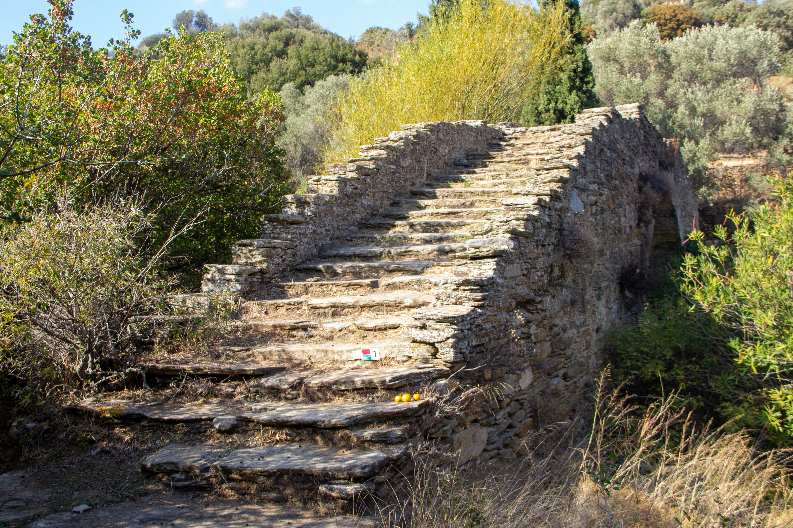
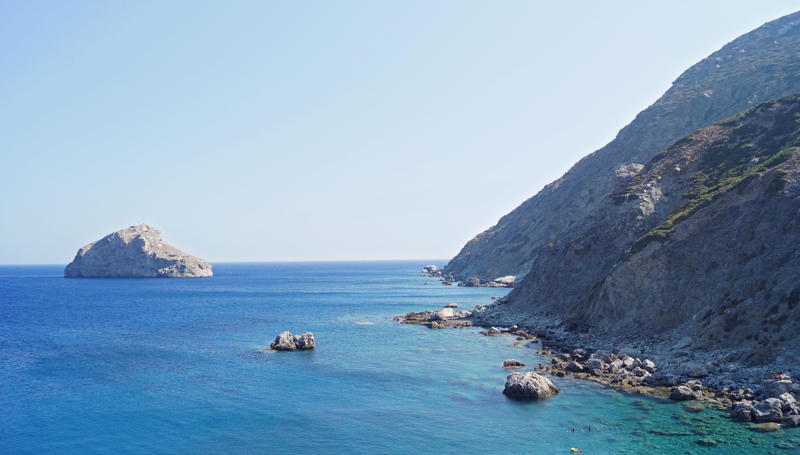
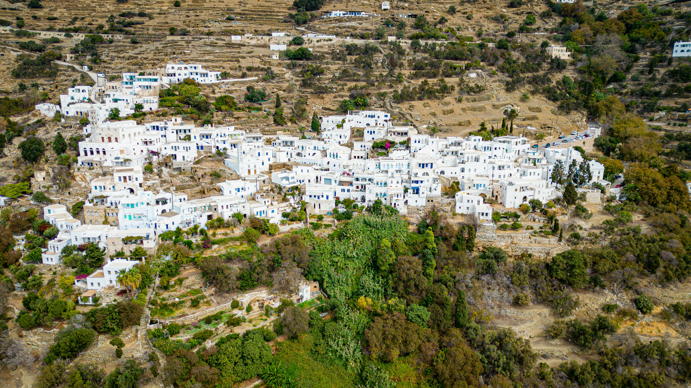
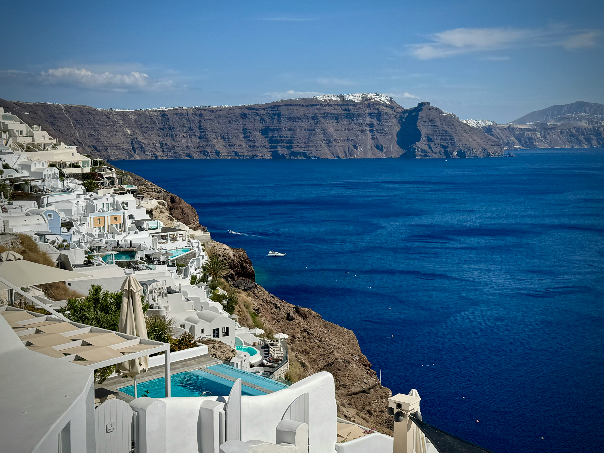
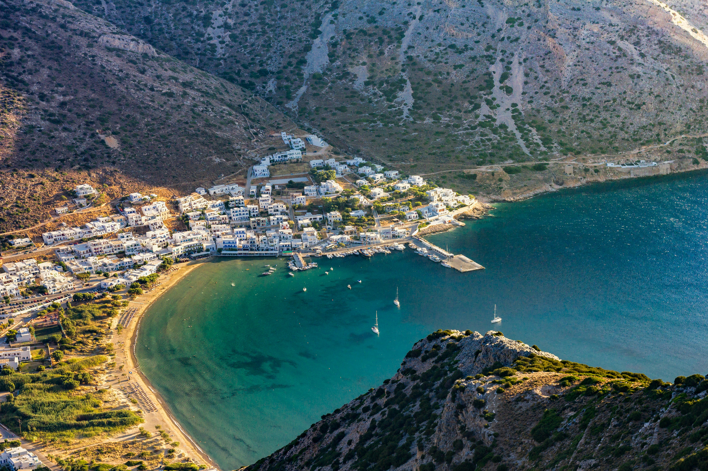
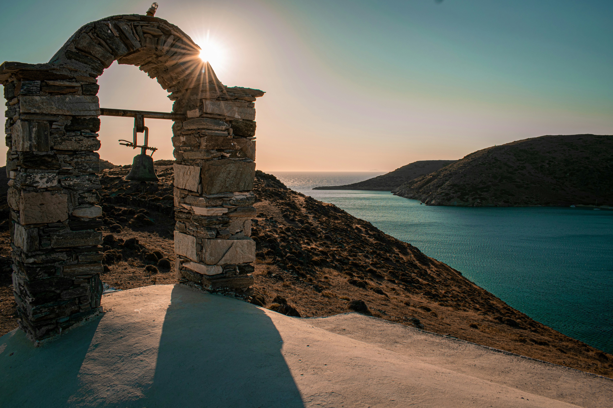
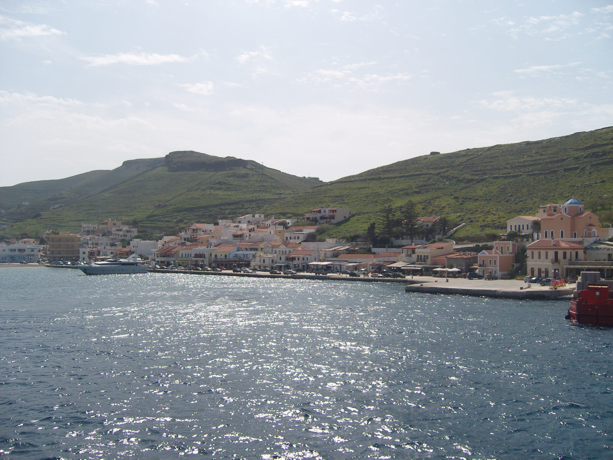
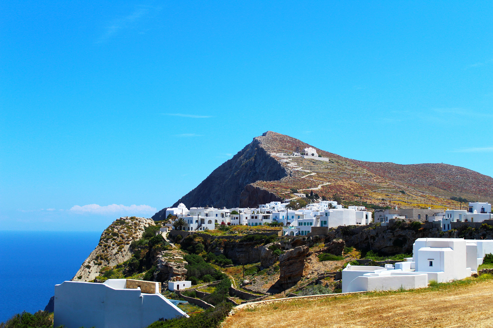
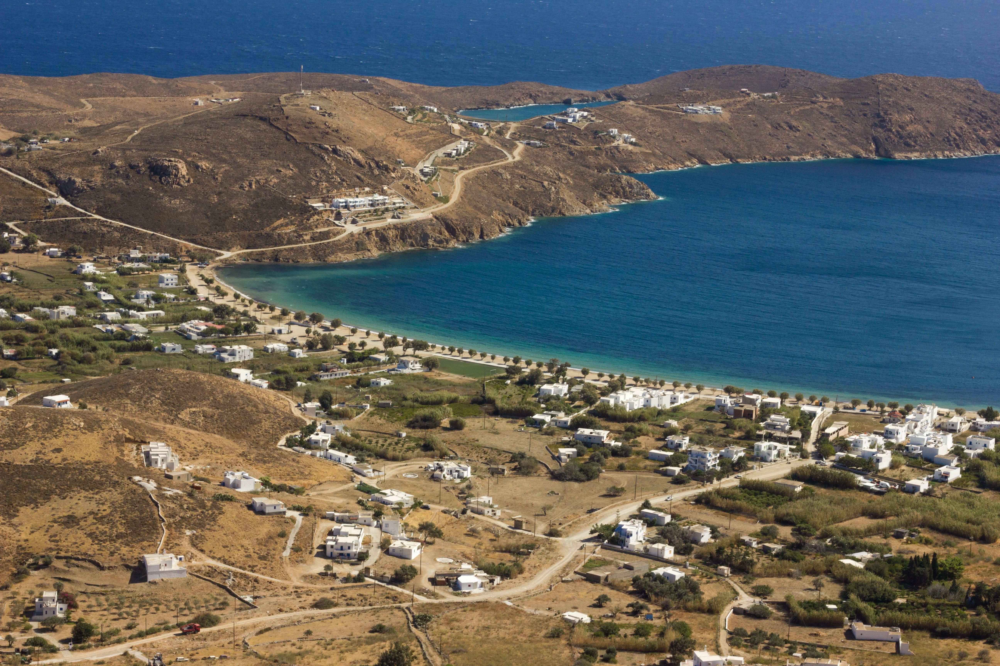

1. Τα Πιστοποιημένα Μονοπάτια της Άνδρου (Andros Routes)
🌿 Ευρωπαϊκή Πιστοποίηση - ΆνδροςΗ Άνδρος είναι ο αδιαμφισβήτητος βασιλιάς της πεζοπορίας στις Κυκλάδες. Διαθέτει ένα δίκτυο άνω των 300 χιλιομέτρων, με τη διαδρομή "Andros Route" να έχει λάβει την κορυφαία ευρωπαϊκή πιστοποίηση "Leading Quality Trails - Best of Europe". Οι διαδρομές περνούν μέσα από καταπράσινες ρεματιές, γεφύρια, νερόμυλους και τρεχούμενα νερά που δεν θυμίζουν σε τίποτα το συνηθισμένο ξερό κυκλαδίτικο τοπίο.
Δες τον Οδηγό Άνδρου →
2. Η Πολιτιστική Διαδρομή προς το Απέραντο Γαλάζιο
⛰️ Άγρια Φύση - ΑμοργόςΗ Αμοργός προσφέρει μερικές από τις πιο επιβλητικές και «άγριες» διαδρομές στο Αιγαίο. Το ιστορικό μονοπάτι «Παλιά Στράτα» ενώνει τη Χώρα με την Αιγιάλη, περνώντας από την Ιερά Μονή Χοζοβιώτισσας. Περπατώντας κατά μήκος της κορυφογραμμής του βουνού, ο πεζοπόρος βρίσκεται ανάμεσα σε γκρεμούς, έχοντας σταθερά στα δεξιά του τη θέα του απέραντου γαλάζιου της θάλασσας από ύψος εκατοντάδων μέτρων.
Δες τον Οδηγό Αμοργού →
3. Τα Μαρμάρινα Χωριά και οι Περιστεριώνες
🏛️ Παράδοση & Πολιτισμός - ΤήνοςΗ ενδοχώρα της Τήνου είναι ένα απέραντο υπαίθριο μουσείο. Τα πεζοπορικά μονοπάτια του νησιού (Tinos Trails) ενώνουν τα δεκάδες μεσαιωνικά και μαρμάρινα χωριά. Οι διαδρομές είναι γεμάτες από τους περίτεχνους τηνιακούς περιστεριώνες, παλιά λιοτρίβια και πέτρινα αλώνια, προσφέροντας μια μοναδική επαφή με την παραδοσιακή κυκλαδίτικη αρχιτεκτονική.
Δες τον Οδηγό Τήνου →
4. Η Συγκλονιστική Πεζοπορία Φηρά - Οία
🌅 Παγκόσμιο Icon - ΣαντορίνηΠρόκειται για μια από τις πιο διάσημες πεζοπορίες παγκοσμίως. Η διαδρομή ακολουθεί πιστά το χείλος του γκρεμού της Καλντέρας για περίπου 9 χιλιόμετρα. Ο πεζοπόρος ξεκινά από τα Φηρά, περνά από το Φηροστεφάνι και το Ημεροβίγλι και καταλήγει στην Οία, έχοντας σταθερά στα αριστερά του το ενεργό ηφαίστειο, τα καταγάλανα νερά και τα υπόσκαφα λευκά σπιτάκια.
Δες τον Οδηγό Σαντορίνης →
5. Τα Αρχαία Μονοπάτια και οι Αρχιτεκτονικοί Οικισμοί
🌿 Οργανωμένο Δίκτυο - ΣίφνοςΗ Σίφνος διαθέτει ένα από τα πιο επαγγελματικά οργανωμένα και σηματοδοτημένα δίκτυα μονοπατιών στην Ελλάδα (Sifnos Trails), που ξεπερνά τα 100 χιλιόμετρα. Οι διαδρομές είναι ήπιες και περνούν μέσα από πανέμορφους παραδοσιακούς οικισμούς, αρχαίες ακροπόλεις, απομονωμένα ξωκλήσια και παλιά εργαστήρια αγγειοπλαστικής, καταλήγοντας σε ήσυχους κόλπους με κρυστάλλινα νερά.
Δες τον Οδηγό Σίφνου →
6. Τα Ξεχασμένα Καλντερίμια και το Κάστρο της Ωριάς
🏰 Ιστορία & Παράδοση - ΚύθνοςΤα μονοπάτια της Κύθνου σε μεταφέρουν σε μια άλλη εποχή, γεμάτη μύθους και μεσαιωνική ιστορία. Η πιο διάσημη και επιβλητική διαδρομή οδηγεί στο ερειπωμένο Κάστρο της Ωριάς, τη μεσαιωνική πρωτεύουσα του νησιού που βρίσκεται σκαρφαλωμένη σε έναν απόκρημνο βράχο στο βορειότερο άκρο, προσφέροντας συγκλονιστική θέα στο ανοιχτό πέλαγος.
Δες τον Οδηγό Κύθνου →
7. Η Διαδρομή προς την Αρχαία Καρθαία
🏛️ Αρχαιολογία & Φύση - Κέα (Τζιά)Η Κέα (Τζιά) φημίζεται για τα λιθόστρωτα μονοπάτια της που διασχίζουν δάση από αιωνόβιες βελανιδιές. Η κορυφαία πεζοπορία του νησιού σε οδηγεί στον απομονωμένο αρχαιολογικό χώρο της Αρχαίας Καρθαίας. Μια διαδρομή που καταλήγει σε μια ερημική παραλία, όπου μπορείς να κολυμπήσεις ακριβώς δίπλα στα ερείπια των αρχαίων ναών του Απόλλωνα και της Αθηνάς.
Δες τον Οδηγό Κέας →
8. Τα Ξερολιθικά Μονοπάτια της Άγριας Ομορφιάς
⛰️ Άγριο Τοπίο - ΦολέγανδροςΗ Φολέγανδρος είναι ένας ιδανικός προορισμός για όσους αγαπούν το αυθεντικό, τραχύ κυκλαδίτικο τοπίο. Τα μονοπάτια της είναι περιτριγυρισμένα από ατελείωτες ξερολιθιές (τις πέτρινες βαθμίδες που έφτιαχναν οι παλιοί αγρότες) και οδηγούν από τη μαγική Χώρα προς την Άνω Μεριά ή σε απομονωμένες, παρθένες παραλίες όπως το Κάτεργο και το Λιβαδάκι.
Δες τον Οδηγό Φολεγάνδρου →
9. Το Μονοπάτι των Μεταλλωρύχων
🌌 Βιομηχανική Κληρονομιά - ΣέριφοςΗ Σέριφος προσφέρει μια μοναδική πεζοπορική εμπειρία που συνδέει τη φύση με τη βιομηχανική ιστορία της Ελλάδας. Το ιστορικό μονοπάτι των μεταλλωρύχων σε οδηγεί στο Μεγάλο Λιβάδι, περνώντας δίπλα από τις παλιές στοές των ορυχείων, τις σκουριασμένες ράγες και τα ερείπια των εγκαταστάσεων φόρτωσης, προσφέροντας ένα απόκοσμο και γοητευτικό σκηνικό.
Δες τον Οδηγό Σερίφου →
10. Η Ιερή Ανάβαση στον Μονόλιθο του Καλάμου
🌌 Ελεύθερο Πνεύμα - ΑνάφηΗ πεζοπορία προς την Ιερά Μονή Καλαμιώτισσας στην Ανάφη είναι μια εμπειρία ζωής. Η διαδρομή ανηφορίζει τον Κάλαμο, τον δεύτερο μεγαλύτερο συμπαγή μονόλιθο της Ευρώπης μετά το Γιβραλτάρ. Φτάνοντας στην κορυφή αυτού του θεόρατου κάθετου βράχου, νιώθεις ότι αιωρείσαι στο κενό, έχοντας μια συγκλονιστική, πανοραμική θέα 360 μοιρών στο Αιγαίο.
Δες τον Οδηγό Ανάφης →